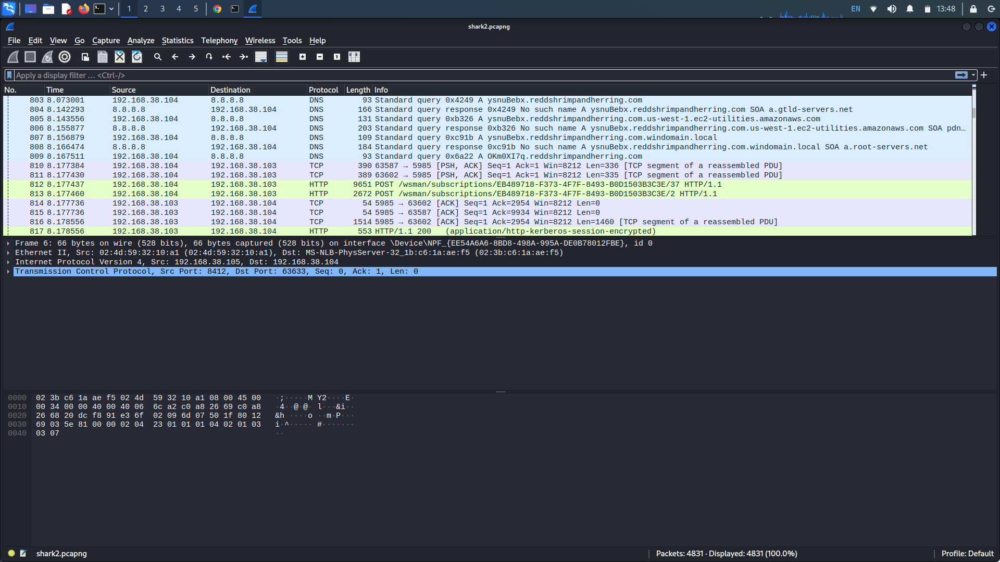
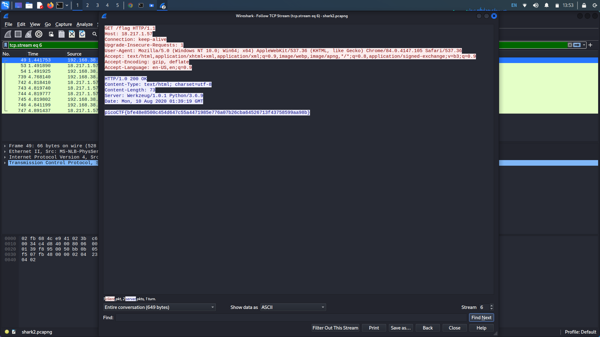
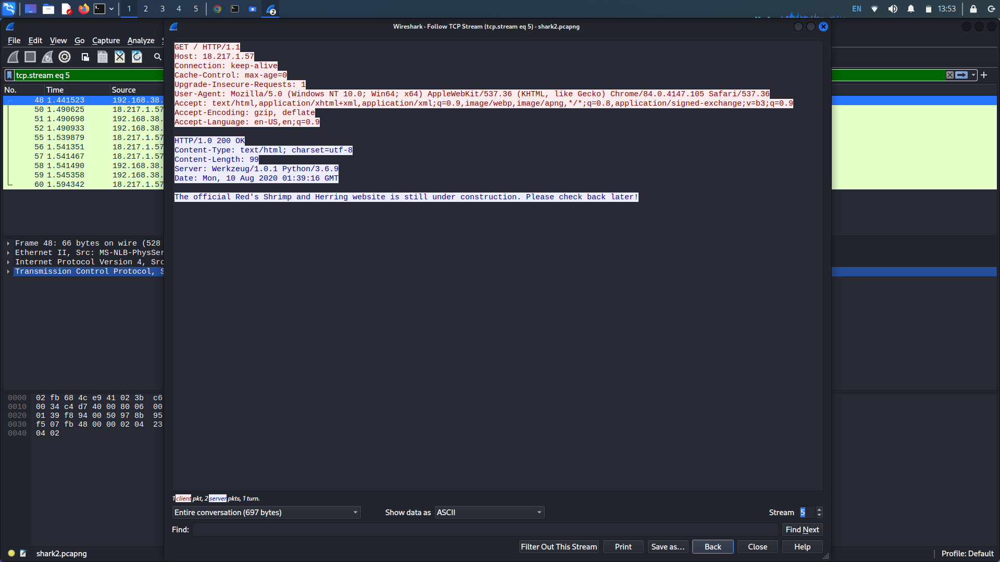
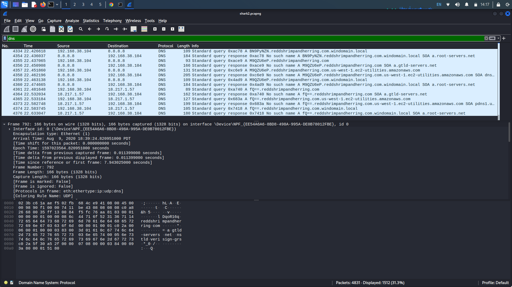
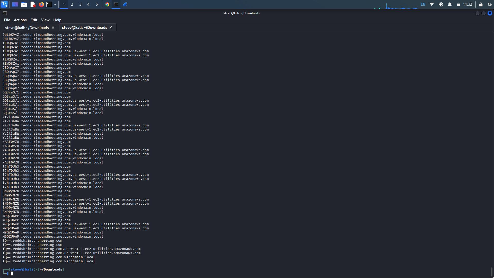
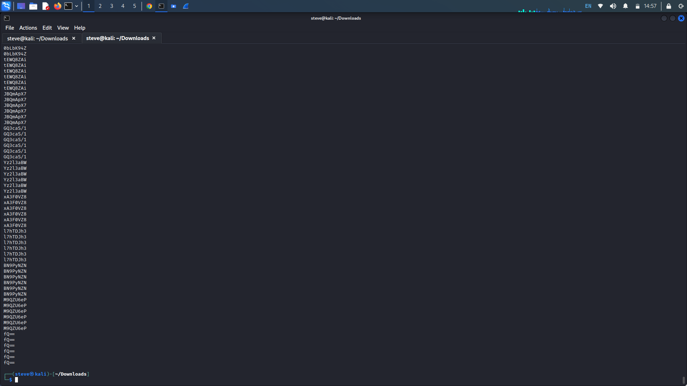
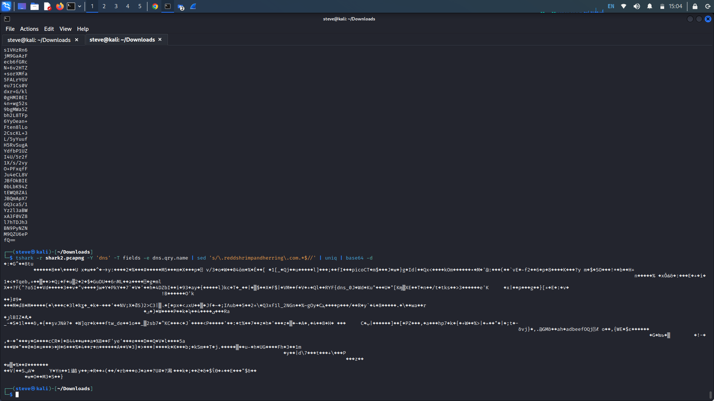
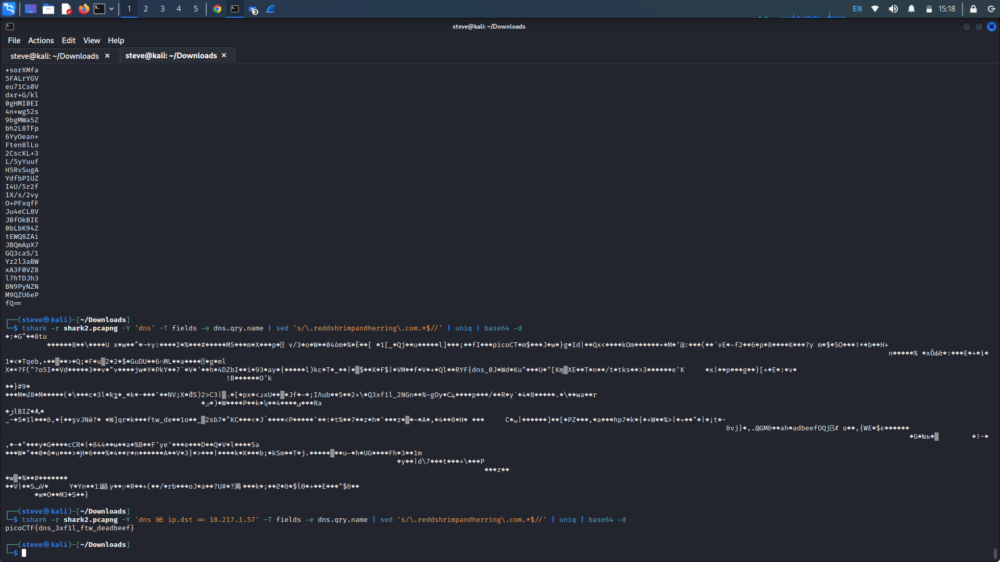

Wireshark twoo twooo two twoo...
Description: Can you find the flag? shark2.pcapng.
Writeup: Open the provided packet capture file in Wireshark. A quick scroll through the
packet captures shows mostly HTTP and DNS protocols being utilized.

Filtering for "http" in the search bar and following the packet's TCP stream, we see what seems to be a flag. Attempting to enter this flag doesn't work.

Looking at the stream before this one, we see a mention of "Red Herring" in the body of the packet. Additionally, there seems to be many more packets with bodies that contain a fake picoCTF flag.

Now, filtering for only DNS packets shows some interesting information. Looking at the packet information, there seems to be short base64 encoded strings before the mention of the redshrimpandherring.com domain.

Lets try to decode them through tshark, Wireshark's command line utility as we are most likely going to need to pipe multiple commands together. First use the command "tshark -r shark2.pcapng -Y 'dns' -T fields -e dns.qry.name" to filter for the DNS query names.

Now we want to remove the .reddshrimpandherring.com extension, we can do this using the sed command which will edit our input stream. Pipe the command sed 's/.reddshrimpandherring.com.*$//' to remove any instance of reddshrmpandherring.com along with anything that follows it.

Now we have the plain base64 encoded strings but there seem to be duplicates. Pipe the uniq command to only print out unique strings. Additionally, pipe the base64 -d command to decode each string.

Our output seems to be jumbled but we see small fragments of the flag. It seems that not all of our strings were base64 encoded. Looking back at our packet transfers, there are three different packet destinations, 8.8.8.8, 192.168.38.104, and 18.217.1.57. This time, we can alter our initial tshark filter out the different destinations ips to find which one returns our flag. Add && ip.dst == (ip address) to our tshark filter.
